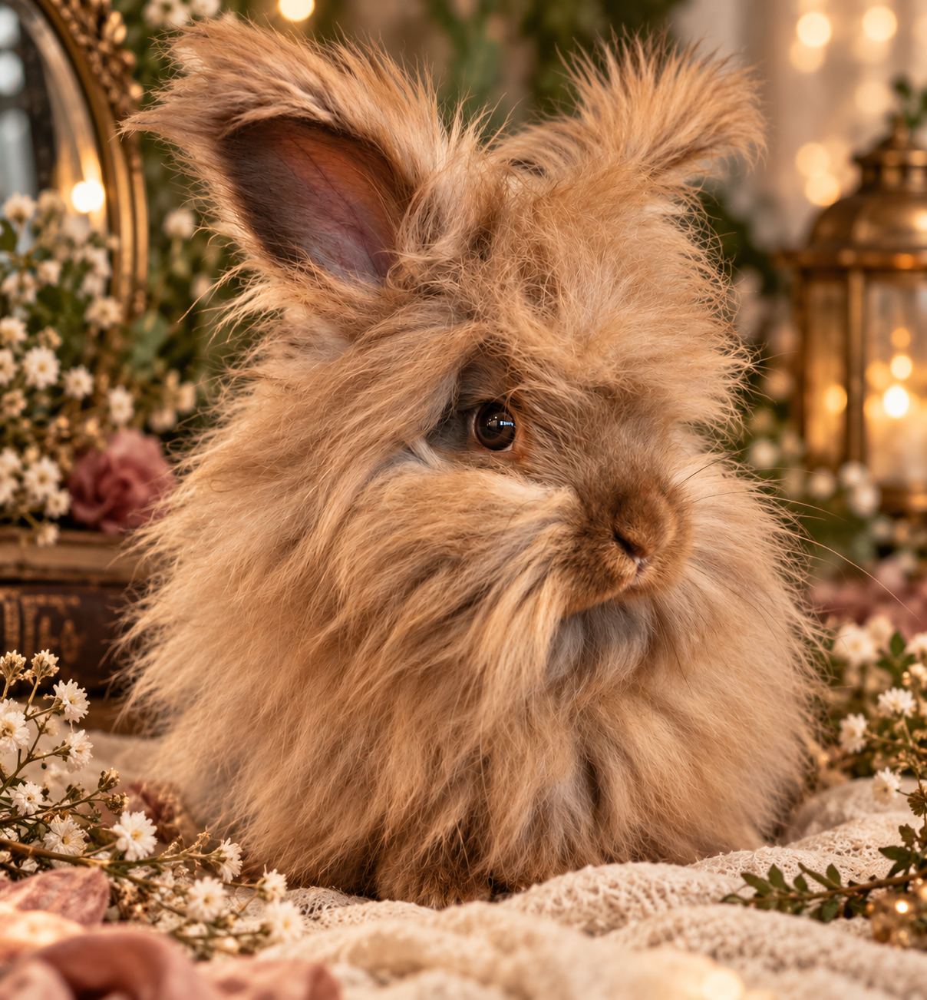
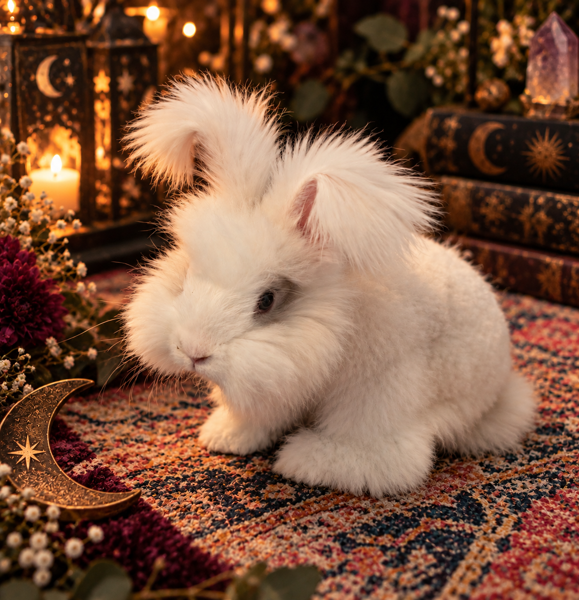
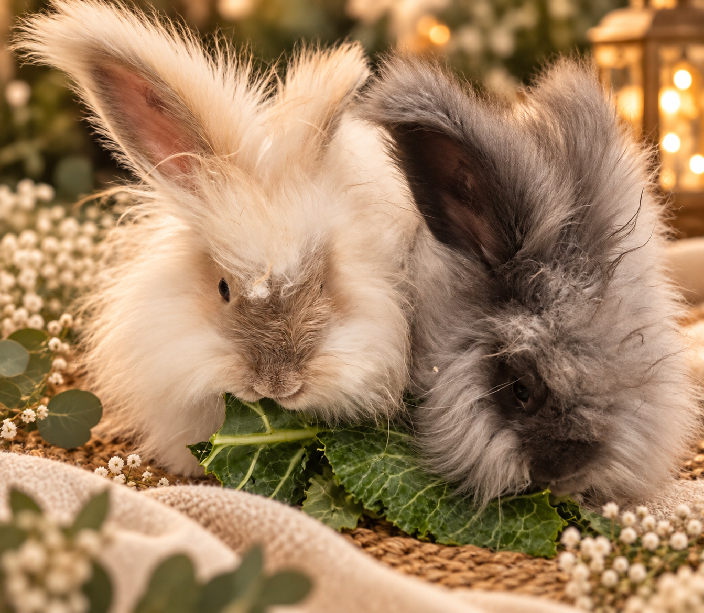

Rabbit Profile
Name, color, sex, pedigree and personality can be added here.
Individual profiles can grow with the rabbitry, including registered names, call names, colors, pedigrees, show information, and personality notes.

Name, color, sex, pedigree and personality can be added here.

A dedicated place to introduce each member of Moonfire Angoras.

Celebrate the rabbits at the heart of Moonfire and the qualities you value in them.